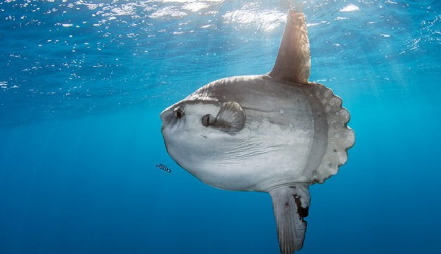

The caudal fin of the ocean sunfish is replaced by a rounded clavus, creating the body’s distinct truncated shape. The body is flattened laterally, giving it a long oval shape when seen head-on. The pectoral fins are small and fan-shaped, while the dorsal fin and the anal fin are lengthened, often making the fish as tall as it is long. Specimens up to 3.2 m (10.5 ft) in height have been recorded.
The mature ocean sunfish has an average length of 1.8 m (5.9 ft) and a fin-to-fin length of 2.5 m (8.2 ft). The weight of mature specimens can range from 247 to 1,000 kg (545 to 2,205 lb), but even larger individuals are not unheard of.
The spinal column of M. mola contains fewer vertebrae and is shorter in relation to the body than that of any other fish. Although the sunfish descended from bony ancestors, its skeleton contains largely cartilaginous tissues, which are lighter than bone, allowing it to grow to sizes impractical for other bony fishes. Its teeth are fused into a beak-like structure, and it has pharyngeal teeth located in the throat.
The sunfish lacks a swim bladder. Some sources indicate the internal organs contain a concentrated neurotoxin, tetrodotoxin, like the organs of other poisonous tetraodontiformes, while others dispute this claim.
In the course of its evolution, the caudal fin (tail) of the sunfish disappeared, to be replaced by a lumpy pseudotail, the clavus. This structure is formed by the convergence of the dorsal and anal fins, and is used by the fish as a rudder. The smooth-denticled clavus retains 12 fin rays, and terminates in a number of rounded ossicles
Ocean sunfish often swim near the surface, and their protruding dorsal fins are sometimes mistaken for those of sharks. However, the two can be distinguished by the motion of the fin. Sharks, like most fish, swim by moving the tail sideways while keeping the dorsal fin stationary. The sunfish, though, swings its dorsal fin and anal fin in a characteristic sculling motion.
Adult sunfish range from brown to silvery-grey or white, with a variety of mottled skin patterns; some of these patterns may be region-specific. Coloration is often darker on the dorsal surface, fading to a lighter shade ventrally as a form of countershading camouflage. M. mola also exhibits the ability to vary skin coloration from light to dark, especially when under attack. The skin, which contains large amounts of reticulated collagen, can be up to 7.3 cm (2.9 in) thick on the ventral surface, and is covered by denticles and a layer of mucus instead of scales. The skin on the clavus is smoother than that on the body, where it can be as rough as sandpaper.
In temperate regions, drifting kelp fields harbor cleaner wrasses and other fish which remove parasites from the skin of visiting sunfish. In the tropics, M. mola solicits cleaning help from reef fishes. By basking on its side at the surface, the sunfish also allows seabirds to feed on parasites from its skin. Sunfish have been reported to breach, clearing the surface by approximately 3 m (10 ft), in an apparent effort to dislodge embedded parasites.